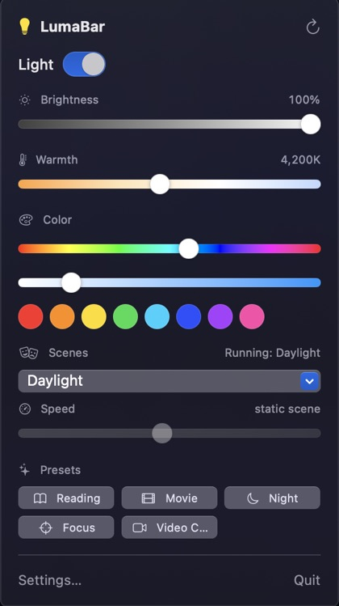
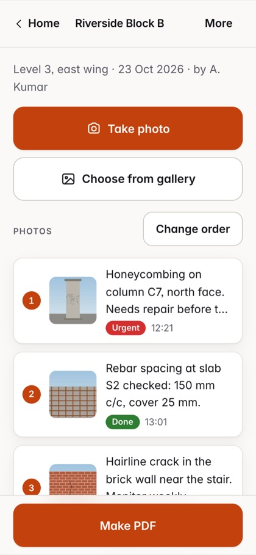
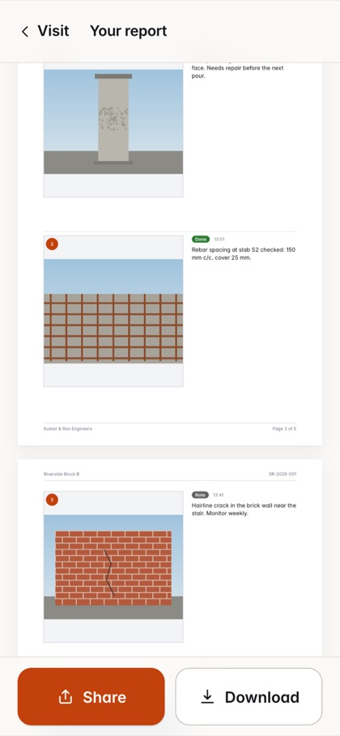
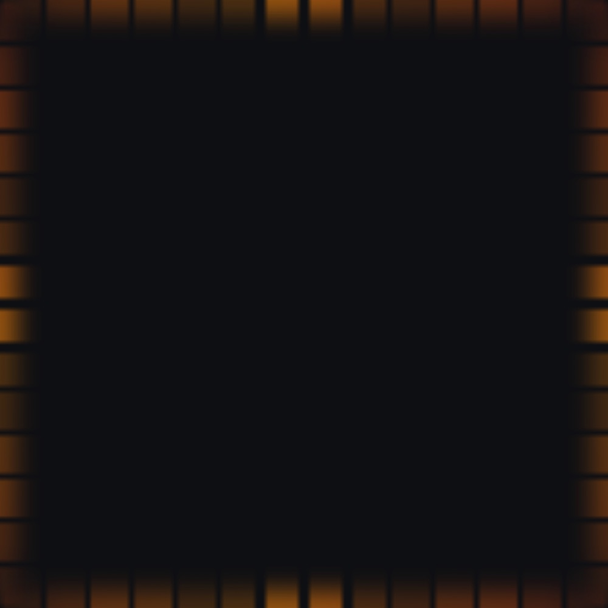
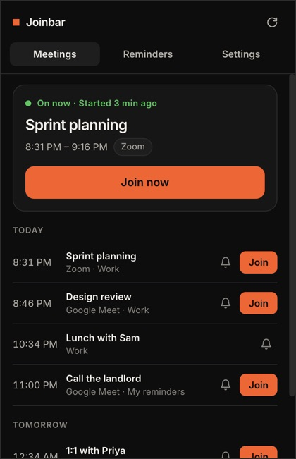
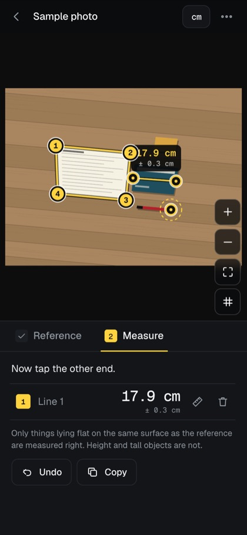
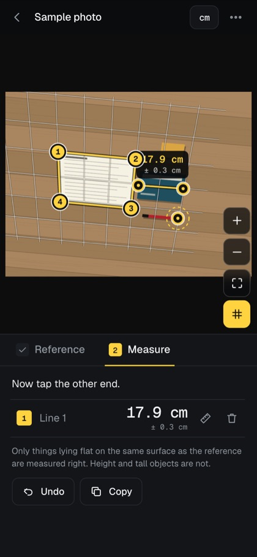
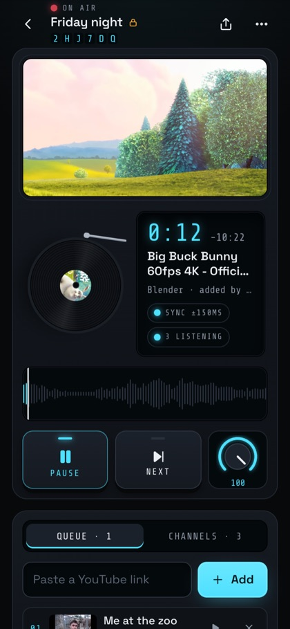

Smart bulbs from the Mac menu bar, over your own network: WiZ, Tuya, Yeelight, LIFX, Hue and Home Assistant.

One small app, every day
One person, one small app a day, shown in public. Each starts as something I wanted and could not find, or could only find behind a payment. Everything is free and open source, nothing needs an account, and I say what I tested and what I did not.
IN MOTION
Brink: light that follows your music
Smart bulbs from the Mac menu bar, over your own network: WiZ, Tuya, Yeelight, LIFX, Hue and Home Assistant.

Take photos on site, add a note to each, and share a clean PDF report. Works offline, no account.


A thin strip of light along your Mac screen’s edges that follows the beat of your music and glows for notifications and calls.

A Windows tray app: a countdown in the icon, reminders with a Join button, and a join shortcut.

Measure anything from a photo: put paper or a card next to it, mark the corners, tap the two ends.


Listen to YouTube songs together, in sync. Start a room, share the code, add to one queue. Phones and laptops.

Apps
For the Mac, for Windows and for the web.
Days
Since the first one. All free and open source.
Accounts
Nothing is sent to me; it all stays on your device.